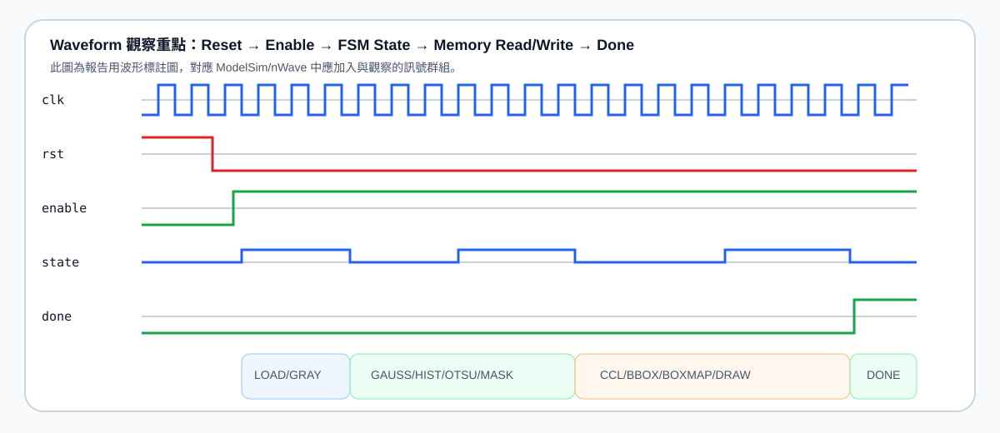
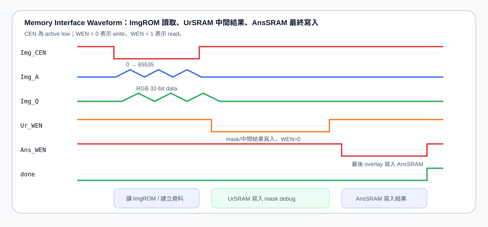
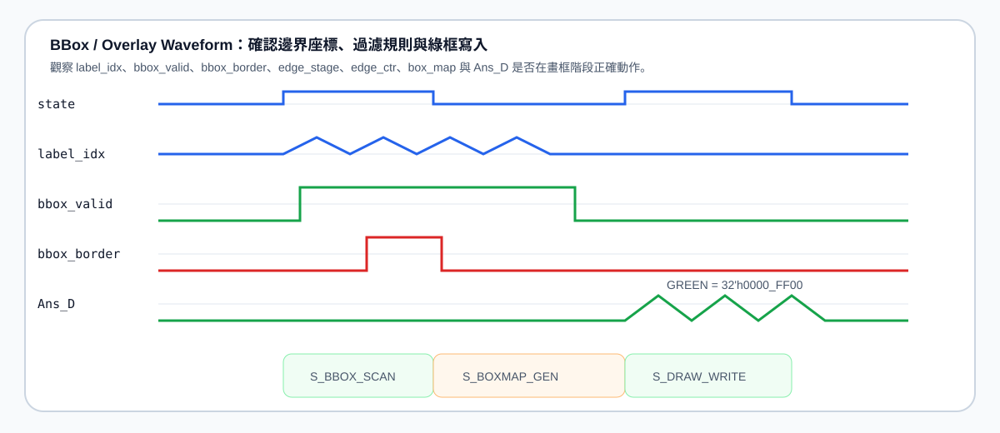
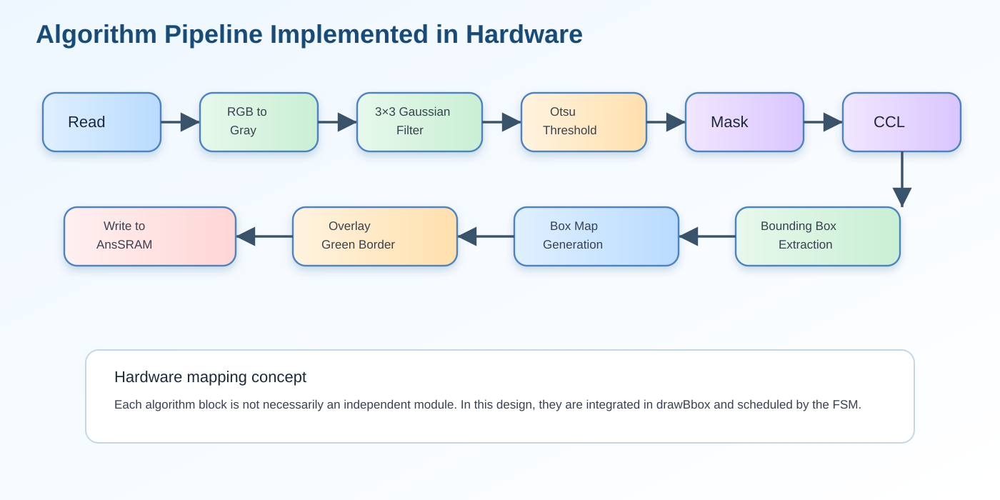

5. Please attach your waveforms and specify your operations on the waveforms.
本題目的重點不是只貼波形，而是要說明「我在波形中加入哪些訊號、如何分組觀察、每個階段正在做什麼、如何證明設計正確完成」。因此本頁以 ModelSim / nWave 的觀察流程為主軸，結合修正版數學式、Lab7.ipynb 的軟體驗證流程、drawBbox.v 的硬體狀態機，以及外部載入圖片，整理成可直接放入報告的完整 HTML。
目錄
一、波形驗證摘要二、正確數學式三、Python 驗證流程四、Verilog 波形對應五、Waveform 操作說明六、圖解與結果七、結論一、Waveform 驗證摘要
本次波形觀察的目的，是確認 drawBbox 模組能夠依序完成：讀取 RGB 影像、轉灰階、Gaussian filter、Otsu threshold、binary mask、8-connected CCL、bounding box extraction、最後將綠色框線 overlay 到原始影像並寫入 AnsSRAM。從模擬結果可確認 P1、P2、P3、P4 都通過，並且總錯誤數為 0，代表輸出結果與 golden answer 完全一致。
| 觀察項目 | 波形中要確認的訊號 | 正確現象 |
|---|---|---|
| Reset / Enable | clk, rst, enable, done | reset 後暫存器歸零，enable 拉高後 FSM 開始運作，完成後 done 拉高。 |
| FSM 流程 | state, addr_cnt, otsu_idx, label_idx | state 按照 LOAD → GRAY → GAUSS/HIST → OTSU → MASK → CCL → BBOX → DRAW → DONE 順序前進。 |
| ROM 讀取 | Img_CEN, Img_A, Img_Q | Img_CEN 為 active low，Img_A 以 row-major 方式由 0 掃到 65535。 |
| SRAM 寫入 | Ur_CEN, Ur_WEN, Ur_A, Ur_D, Ans_CEN, Ans_WEN, Ans_A, Ans_D | WEN=0 時寫入；UrSRAM 用於 mask/debug，AnsSRAM 寫入最終 overlay RGB 結果。 |
| BBox Overlay | box_map, edge_stage, edge_ctr, Ans_D | 當 box_map=1 時，Ans_D 輸出 32'h0000_FF00；否則輸出原始 RGB pixel。 |
二、正確數學式（已修正版）
2.1 RGB to Grayscale：round-to-nearest, ties-to-even
Lab7 指定輸入影像為 256×256 RGB 影像，灰階公式為：
硬體中使用整數近似：
這裡不能只寫成 (S+128)>>8，因為那是一般四捨五入，沒有處理 ties-to-even。正確作法是先取商數 q 與餘數 r，再判斷 r 是否大於 128；若剛好等於 128，只有 q 為奇數時才進位，讓結果變成偶數。
2.2 Gaussian Filter：3×3 權重與 reflect101 邊界
邊界採用 reflect without repeating edge，也就是 reflect101 padding。以一維座標為例：
2.3 Otsu Threshold：最大化 between-class variance
對每一個候選 threshold T，將灰階分成 background 與 foreground：
為避免硬體中大量除法，可使用等價 score 比較：
其中 \(S_{total}=\sum_{i=0}^{255}i h(i)\)，\(S_b(T)=\sum_{i=0}^{T}i h(i)\)。波形中應觀察 otsu_idx, wb_acc, sum_b_acc, cand_score, best_score, otsu_t，確認 otsu_idx 掃描 0～255，最後保留最大 score 的 threshold。
2.4 Binary Mask 與 Auto-Polarity Correction
這個判斷可避免 threshold 後背景被誤當成前景。若大於 threshold 的 pixel 超過整張圖的一半，表示可能是 polarity 反了，所以要反轉 mask。
2.5 8-connected CCL 與 Bounding Box
由於掃描順序為 row-major，當前 pixel 只需檢查已經掃描過的四個鄰居：
如果 component 碰到影像邊界，則不畫 bounding box：
2.6 Overlay 綠框輸出
若多個 bbox 邊界重疊在同一個 pixel，box_map 仍只會被設為 1，因此同一點只輸出一次綠色，不會造成重複寫入錯誤。
三、Python code（Lab7.ipynb）驗證流程說明
Lab7.ipynb 可作為演算法的軟體黃金模型，主要用途是將硬體流程先以 Python 方式驗證，再用 Verilog 實作相同邏輯。報告中不需要貼完整 notebook，但可以說明 notebook 對應到硬體的每個階段。
| Python / Notebook 階段 | 目的 | 對應硬體階段 |
|---|---|---|
| 讀入 RGB 圖片 | 確認 256×256 row-major pixel 順序正確 | S_LOAD, Img_A, Img_Q |
| RGB to Gray | 用修正版灰階公式與 ties-to-even rounding 產生灰階圖 | gray_round_rgb() |
| Gaussian Filter | 用 3×3 kernel 與 reflect101 padding 平滑雜訊 | gaussian_at_reflect() |
| Histogram / Otsu | 建立 256-level histogram，找出最大 between-class variance 的 threshold | S_HIST_CLEAR, S_GAUSS_HIST, S_OTSU_SCAN |
| Mask / Polarity | 產生 foreground/background mask，必要時反轉 polarity | S_COUNT_HI, S_POLARITY, S_MASK_WRITE |
| CCL / BBox | 找出 connected components 與 bbox 座標 | S_CCL_SCAN, S_BBOX_SCAN |
| Overlay / Output | 將 bbox 邊界畫成綠色，輸出 BMP 結果 | S_BOXMAP_GEN, S_DRAW_WRITE |
# Python 驗證流程摘要（報告版，不貼完整 notebook）
# 1. 讀入 RGB image，確認尺寸為 256×256
# 2. gray = round_ties_to_even((77R + 150G + 29B) / 256)
# 3. 使用 3×3 Gaussian kernel 與 reflect101 padding
# 4. 建立 histogram，使用 Otsu score 找最大 threshold
# 5. 產生 binary mask，若 foreground 面積過大則做 auto-polarity correction
# 6. 以 8-connected CCL 找 components
# 7. 計算每個 component 的 xmin/xmax/ymin/ymax
# 8. 過濾 touching-border 與太小的 component
# 9. 將 box_map 為 1 的 pixel overlay 成 32'h0000_FF00
# 10. 輸出 drawBbox_result_p1~p4.bmp，與 golden answer 比對四、Verilog code 與波形觀察對應
4.1 FSM 狀態流程
本設計以單一主控 FSM 串接所有影像處理階段。觀察 waveform 時，最重要的是確認 state 不會停住、不會跳錯，也不會在尚未完成資料掃描時提前進入下一階段。
localparam [5:0]
S_IDLE = 6'd0,
S_LOAD = 6'd1,
S_GRAY = 6'd2,
S_HIST_CLEAR = 6'd3,
S_GAUSS_HIST = 6'd4,
S_OTSU_INIT = 6'd5,
S_OTSU_SCAN = 6'd6,
S_COUNT_HI = 6'd7,
S_POLARITY = 6'd8,
S_MASK_WRITE = 6'd9,
S_PARENT_INIT = 6'd10,
S_CCL_SCAN = 6'd11,
S_BBOX_INIT = 6'd12,
S_BBOX_SCAN = 6'd13,
S_BOXMAP_CLEAR = 6'd14,
S_BOXMAP_GEN = 6'd15,
S_DRAW_WRITE = 6'd16,
S_DONE = 6'd17;4.2 波形中要加入的 Verilog 訊號
| 群組 | 建議加入訊號 | 操作說明 |
|---|---|---|
| Control | clk, rst, enable, done, state | 確認 reset、start、state transition 與完成旗標。 |
| Address Counter | addr_cnt, x_i, y_i | 確認影像以 row-major 掃描，addr_cnt 對應 x=addr[7:0]、y=addr[15:8]。 |
| ImgROM | Img_CEN, Img_A, Img_Q | 確認讀取啟用與位址遞增。 |
| UrSRAM | Ur_CEN, Ur_WEN, Ur_A, Ur_D | 確認 mask 或中間結果寫入，WEN=0 時為 write。 |
| AnsSRAM | Ans_CEN, Ans_WEN, Ans_A, Ans_D | 確認最後 overlay 結果寫入，box_map=1 時寫入綠色。 |
| Otsu | otsu_idx, otsu_t, wb_acc, sum_b_acc, cand_score, best_score | 確認 threshold 由 0 掃到 255，並記錄最大 score。 |
| Mask | count_hi, invert_sel, base_i, mask_mem | 確認前景判斷與 polarity 是否正確。 |
| CCL / BBox | n_w, n_nw, n_n, n_ne, chosen_label, root_label, bbox_xmin, bbox_xmax, bbox_ymin, bbox_ymax | 確認 8-connected labeling、union-find root 與 bbox 更新。 |
| Overlay | box_map, edge_stage, edge_ctr, GREEN, Ans_D | 確認四條邊逐步產生，最後在 AnsSRAM 中畫出綠框。 |
五、Waveform 圖片與操作說明
以下波形圖以外部 SVG 圖片載入，適合放在報告中說明 ModelSim/nWave 的觀察操作。實際操作時可在 ModelSim Transcript 輸入 add wave 指令，或在 GUI 中將訊號拖入 waveform 視窗。
5.1 Waveform 操作一：觀察 reset、enable、FSM 與 done

操作說明：先加入 clk, rst, enable, state, done。模擬開始時，rst 會將內部暫存器與狀態歸零；當 enable 拉高後，FSM 從 S_IDLE 進入 S_LOAD。接著 state 依序經過灰階轉換、Gaussian、Otsu、mask、CCL、bbox 與 draw 階段。最後進入 S_DONE，done 拉高，代表整張影像已經處理完成。
# ModelSim / nWave 建議操作
add wave -divider CONTROL
add wave sim:/tb/u_drawBbox/clk
add wave sim:/tb/u_drawBbox/rst
add wave sim:/tb/u_drawBbox/enable
add wave -radix unsigned sim:/tb/u_drawBbox/state
add wave sim:/tb/u_drawBbox/done
run -all5.2 Waveform 操作二：觀察 ImgROM / UrSRAM / AnsSRAM

操作說明：加入 ROM/SRAM 相關訊號後，先觀察 Img_CEN 是否在讀圖階段拉低，並確認 Img_A 由 0 依序遞增到 65535。接著觀察 Ur_WEN 與 Ur_D，確認 mask 產生時寫入 0 或 1。最後在 S_DRAW_WRITE 觀察 Ans_WEN=0、Ans_A 遞增，以及 Ans_D 寫入原始 RGB 或綠色框線。
add wave -divider MEMORY_INTERFACE
add wave sim:/tb/u_drawBbox/Img_CEN
add wave -radix unsigned sim:/tb/u_drawBbox/Img_A
add wave -radix hexadecimal sim:/tb/u_drawBbox/Img_Q
add wave sim:/tb/u_drawBbox/Ur_CEN
add wave sim:/tb/u_drawBbox/Ur_WEN
add wave -radix unsigned sim:/tb/u_drawBbox/Ur_A
add wave -radix hexadecimal sim:/tb/u_drawBbox/Ur_D
add wave sim:/tb/u_drawBbox/Ans_CEN
add wave sim:/tb/u_drawBbox/Ans_WEN
add wave -radix unsigned sim:/tb/u_drawBbox/Ans_A
add wave -radix hexadecimal sim:/tb/u_drawBbox/Ans_D5.3 Waveform 操作三：觀察 Otsu threshold 與 mask
操作說明：在 S_OTSU_SCAN 階段，應觀察 otsu_idx 是否從 0 掃描到 255；wb_acc 與 sum_b_acc 會隨著 threshold 逐步累積；cand_score 若大於 best_score，則更新 otsu_t。進入 S_COUNT_HI 後，電路計算大於 threshold 的 pixel 數量；進入 S_POLARITY 後，若 count_hi > 32768，則 invert_sel 會被設為 1，後續 mask 會反轉。
add wave -divider OTSU_MASK
add wave -radix unsigned sim:/tb/u_drawBbox/otsu_idx
add wave -radix unsigned sim:/tb/u_drawBbox/otsu_t
add wave -radix unsigned sim:/tb/u_drawBbox/wb_acc
add wave -radix unsigned sim:/tb/u_drawBbox/sum_b_acc
add wave -radix unsigned sim:/tb/u_drawBbox/cand_score
add wave -radix unsigned sim:/tb/u_drawBbox/best_score
add wave -radix unsigned sim:/tb/u_drawBbox/count_hi
add wave sim:/tb/u_drawBbox/invert_sel5.4 Waveform 操作四：觀察 CCL、BBox 與 Overlay

操作說明：在 S_CCL_SCAN 中，觀察 n_w, n_nw, n_n, n_ne 四個已掃描鄰居 label。若四個鄰居皆為 0，代表新 component，需要產生新 label；若有非零 label，則選擇最小 label 並透過 union-find 合併等價 label。進入 S_BBOX_SCAN 後，觀察 bbox_xmin, bbox_xmax, bbox_ymin, bbox_ymax 是否隨 foreground pixel 更新。最後在 S_BOXMAP_GEN 逐邊建立 box_map，在 S_DRAW_WRITE 時若 box_map=1，Ans_D 應寫入 32'h0000_FF00。
add wave -divider CCL_BBOX_OVERLAY
add wave -radix unsigned sim:/tb/u_drawBbox/n_w
add wave -radix unsigned sim:/tb/u_drawBbox/n_nw
add wave -radix unsigned sim:/tb/u_drawBbox/n_n
add wave -radix unsigned sim:/tb/u_drawBbox/n_ne
add wave -radix unsigned sim:/tb/u_drawBbox/chosen_label
add wave -radix unsigned sim:/tb/u_drawBbox/root_label
add wave -radix unsigned sim:/tb/u_drawBbox/label_idx
add wave -radix unsigned sim:/tb/u_drawBbox/edge_stage
add wave -radix unsigned sim:/tb/u_drawBbox/edge_ctr
add wave -radix hexadecimal sim:/tb/u_drawBbox/Ans_D六、圖解與輸出結果（圖片皆為外部載入）
6.1 演算法與硬體架構圖



6.2 P4 結果圖與中間圖


6.3 Final BMP Result


七、可直接放報告的最終回答
In the waveform verification, I added the control signals, memory interface signals, Otsu threshold signals, CCL labeling signals, bounding-box signals, and final SRAM output signals into the waveform window. First, I observed rst, enable, state, and done to confirm that the FSM started correctly after reset and finished by asserting done. Then, I checked Img_CEN, Img_A, and Img_Q to ensure that the input image was read from ImgROM in row-major order. During the thresholding stage, I observed otsu_idx, cand_score, best_score, and otsu_t to verify that the Otsu threshold was selected by maximizing the between-class variance score. After that, I checked count_hi and invert_sel to confirm the auto-polarity correction. In the CCL and bounding-box stages, I observed the neighboring labels, selected label, root label, and bbox coordinates to verify 8-connected component labeling and bounding-box extraction. Finally, during S_DRAW_WRITE, I checked Ans_WEN, Ans_A, and Ans_D. When box_map was asserted, Ans_D correctly became 32'h0000_FF00; otherwise, the original RGB pixel was written back. Therefore, the waveform confirms that the complete hardware flow operates correctly from image reading to final bounding-box overlay.